Codemonkey
Stefano Allevi 0000990314,
Valerio Iacobucci 0000976541,
Alessandro Ricci-Armandi 0000978068
L’obiettivo è sviluppare una piattaforma web che espone programmatori a realtà lavorative che ne hanno bisogno. Sia i programmatori che le aziende si registrano al sito, e sono interfacciati al servizio Codemonkey attraverso pannelli diversi. Un programmatore registrato inserisce i propri contatti, una breve descrizione e un elenco degli strumenti software nei quali ha competenze. Un’azienda registrata può cercare programmatori filtrandoli per gli strumenti software dei quali ha esigenza. Quando l’azienda sceglie un programmatore, a questo arriva una notifica e può decidere di accettare il lavoro. A lavoro concluso, l’azienda valuta il programmatore con un sistema di quotazione. Il profilo del programmatore è aggiornato con i suoi lavori recenti.
Gli utenti del servizio Codemonkey si registrano da una pagina e indicano se intendono registrarsi come Codemonkey o Clienti
La Codemonkey potrá accedere, modificare i suoi dati e accettare eventuali lavori dopo aver eseguito l’Autenticazione
Un Cliente potrá accedere, modificare i suoi dati e gestire le Collaborazioni dopo aver eseguito il l’Autenticazione
Gli Utenti possono sfogliare il sito. Solo i clienti possono mandare richieste di Lavoro alle Codemonkey
Le Codemonkey possono accettare o rifiutare i lavori
I clienti possono valutare la Codemonkey solo dopo aver terminato la collaborazione e la valutazione potrá ache opzionalmente contenere una recensione
Si potranno cercare Codemonkey utlizzando dei filtri specifici
| ID | Requisito |
|---|---|
| RF | Deve esistere un sistema per Registrare nuovi Utenti |
| RF | Deve essere disposto un sistema di Autenticazione per Utenti giá Registrati |
| RF | Deve essere possibile eseguire una Ricerca di Codemonkey con utilizzo di Filtri |
| RF | Una Codemonkey e un Cliente potranno modificare l’E-mail e la Password legate all’Account |
| RF | Una Codemonkey e un Cliente potranno modificare la propria descrizione, nome Utente, immagine di profilo e biografia legate al proprio Account |
| RF | Una Codemonkey e un Cliente potranno visualizzare tutte le richieste di Lavoro che li riguardano |
| RF | Una Codemonkey e un Cliente possono in qualsiasi momento effettuare una segnalazione ad un altro Utente Registrato |
| RF | Una Codemonkey deve poter gestire i propri Tag |
| RF | Una Codemonkey dovrá avere la possibilitá di Accettare o Rifiutare una proposta di Lavoro presentata da un Cliente |
| RF | Una Codemonkey avrá la possibilitá di Interrompere una Collaborazione con un Cliente |
| ID | Requisito |
|---|---|
| RF | Una Codemonkey potrá essere visualizzata solo se ha un Profilo Completo |
| RF | Un Cliente puó effettuare proposte di Collaborazione ad una Codemonkey |
| RF | Un Cliente potrá terminare una Collaborazione con una Codemonkey fornendo una valutazione e potrá inoltre scrivere una breve recensione |
| RF | Un Amministratore deve poter essere in grado di Eliminare, Bloccare, Sospendere e Limitare qualsiasi Utente Registrato |
| RF | Un Amministratore deve approvare i Tag proposti dalle Codemonkey |
| RF | Un Cliente in stato di Sospensione non potrá piú proporre Collaborazioni a Codemonkey, potrá solo portare a termine quelle giá avviate |
| RF | Un Utente Registrato quando viene Bloccato termina immediatamente tutte le Collaborazioni e non potrá piú avviarne di nuove |
| RF | Si potrá vedere quanti lavori una Codemonkey sta attualmente svolgendo |
| RF | Sará possibile vedere la Valutazione della Codemonkey |
| ID | Requisito |
|---|---|
| RNF | Il sito deve essere facile da navigare |
| RNF | Sará possibile vedere a quali Collaborazioni la Codemonkey ha preso parte |
| RNF | Il sito avrà facilitazioni per l’accessibilità, compresa una modalità "Scura" |
| RNF | Una Codemonkey sospesa non deve piú comparire nelle ricerche effettuate dagli Utenti |
| ID | Requisito |
|---|---|
| RD | Non é necessaria l’Autenticazione per eseguire una Ricerca di Codemonkey |
| RD | Gli Amministratori del sistema devono essere creati prima dell’avvio del sistema |
| RD | Un Utente Registrato potrà essere esclusivamente un Cliente o una Codemonkey |
| RD | Un Utente Registrato in qualsiasi momento puó richiedere l’eliminazione del suo Account |
| Titolo | Homepage |
|---|---|
| Descrizione | Sezione principale nella quale si possono eseguire ricerche di Codemonkey |
| Attori | Utente, Cliente |
| Relazioni | |
| Precondizioni | |
| Postcondizioni | |
| Scenario Principale | Un Utente attraverso l’utilizzo di Tag puó trovare la Codemonkey ideale per sviluppare il suo progetto |
| Scenari Alternativi | |
| Requisiti NF | Interfaccia grafica intuitiva e dall’estetica pulita |
| Punti Aperti | Per efficienza nell’esecuzione del sistema, non si potranno scaricare tutti i profili aderenti ai Tag in una sola volta, come si potrebbe implementare? Si potrà scaricare la lista delle Codemonkey aderenti ai Tag in? Come funzionerà il caricamento di nuovi profili un avolta raggiunta la fine della pagina? |
| Titolo | Registrazione |
|---|---|
| Descrizione | Sezione che consente la Registrazione di un Utente |
| Attori | Utente |
| Relazioni | |
| Precondizioni | |
| Postcondizioni | L’Utente viene registrato nel sistema come Codemonkey o come Cliente |
| Scenario Principale |
|
| Scenari Alternativi | Se lo Username é giá stato scelto o l’Email immessa é collegata a un Account giá registrato non sará possibile procedere alla Registrazione dell’Utente |
| Requisiti NF | Sia nel caso in cui venga inserito un Username giá esistente, sia nel caso venga inserita una Email associata ad un Account esistente, dovrá essere segnalato all’Utente che non é stato possibile effettuare la Registrazione spiegandone la motivazione |
| Punti Aperti | Verrá abilitata l’autenticazione a 2 fattori giá in fase di Registrazione? Bisognerá assicurarsi che l’Utente non si sbagli a digitare la Password, ci sarà un campo di conferma Password? |
| Titolo | Autenticazione |
|---|---|
| Descrizione | Sezione dedicata all’Autenticazione di un Utente |
| Attori | Utente |
| Relazioni | Gestione Profilo, Proponi Lavoro, Fornisci recensione, Area personale, Gestione Utenti |
| Precondizioni | L’Utente deve essere giá registrato all’interno del sistema oppure deve essere un Amministratore. |
| Postcondizioni | L’Utente sarà Utente Autenticato oppure Amministratore. |
| Scenario Principale |
|
| Scenari Alternativi | Nel caso che i dati forniti per l’autenticazione siano incorretti verrá visualizzato un messaggio di erroreNel caso l’utente sia stato bloccato da un Amministratore verrá fornito un messaggio di errore. |
| Requisiti NF | Sará sempre presente un bottone per inoltrare una richiesta di recupero Password all’Amministratore. |
| Punti Aperti |
| Titolo | Gestione Profilo |
|---|---|
| Descrizione | Sezione dedicata alla gestione dei dati di un Account |
| Attori | Cliente, Codemonkey |
| Relazioni | Autenticazione |
| Precondizioni | La Codemonkey o il Cliente devono aver effettuato l’Autenticazione |
| Postcondizioni | |
| Scenario Principale |
|
| Scenari Alternativi | . Una Codemonkey potrà modificare i propri Tag |
| Requisiti NF | |
| Punti Aperti | Se un Utente Registrato cambia la sua email potrebbero esserci incomprensioni? |
| Titolo | Imposta Tag di Ricerca |
|---|---|
| Descrizione | Gestione dei Tag della Codemonkey |
| Attori | Codemonkey |
| Relazioni | Autenticazione |
| Precondizioni | |
| Postcondizioni | I Tag vengono aggiornati |
| Scenario Principale |
|
| Scenari Alternativi | . Se il Tag che si vuole aggiungere non é presente tra quelli disponibili, la Codemonkey puó inviare una richiesta per aggiungerlo |
| Requisiti NF | I Tag vengono aggiunti digitando in una casella di testo |
| Punti Aperti | Cosa succede se si tenta di aggiunere un nuovo Tag? Bisognerá che un Amministratore controlli il Tag prima di aggiungerlo? |
| Titolo | Segnalazione ad Amministratore |
|---|---|
| Descrizione | Funzionalitá per effettuare una Segnalazione ad un Amministratore |
| Attori | Codemonkey, Cliente |
| Relazioni | Lista Collaborazioni |
| Precondizioni | Codemonkey e Cliente devono essere autenticati |
| Postcondizioni | La richiesta sará inoltrata ad un Amministratore |
| Scenario Principale |
|
| Scenari Alternativi | |
| Requisiti NF | |
| Punti Aperti |
| Titolo | Proponi Lavoro |
|---|---|
| Descrizione | Sezione dedicata all’invio di una proposta di Lavoro ad una Codemonkey |
| Attori | Cliente, Utente |
| Relazioni | Autenticazione |
| Precondizioni | Un Cliente Sospeso non puó fare alcuna richiesta di Lavoro |
| Postcondizioni | La richiesta di Lavoro viene inoltrata alla Codemonkey |
| Scenario Principale |
|
| Scenari Alternativi | Un Cliente può procedere senza dovere effettuare l’Autenticazione nuovamente. |
| Requisiti NF | Se il Cliente è Sospeso verrá visualizzata una pagina di errore che lo avvisa di non poter effettuare la richiesta di Lavoro |
| Punti Aperti | Per evitare che vengano inviate richieste di Lavoro non sufficentemente dettagliate ci sarà un numero minimo di caratteri da inserire nel campo di testo |
| Titolo | Lista Collaborazioni |
|---|---|
| Descrizione | Lista di tutte le collaborazioni |
| Attori | Codemonkey, Cliente |
| Relazioni | Gestione Profilo |
| Precondizioni | Codemonkey e Cliente devono essere autenticati |
| Postcondizioni | |
| Scenario Principale |
|
| Scenari Alternativi | |
| Requisiti NF | |
| Punti Aperti | Cosa succede se una Codemonkey Interrompe un Lavoro giá iniziato? Il Cliente potrà ancora effettuare una Valutazione? |
| Titolo | Accetta/Rifiuta proposta di Lavoro |
|---|---|
| Descrizione | Sezione per la gestione delle Collaborazioni della Codemonkey |
| Attori | Codemonkey |
| Relazioni | Autenticazione |
| Precondizioni | Il Lavoro é stato proposto alla Codemonkey |
| Postcondizioni | Il Lavoro diventa “in Corso” |
| Scenario Principale |
|
| Scenari Alternativi | . La Codemonkey rifiuta la proposta |
| Requisiti NF | |
| Punti Aperti |
| Titolo | Interrompi Lavoro |
|---|---|
| Descrizione | Funzionalità per l’interruzione di una Collaborazione in corso da parte della Codemonkey |
| Attori | Codemonkey |
| Relazioni | Autenticazione |
| Precondizioni | Il Lavoro é stato già accetato dalla Codemonkey |
| Postcondizioni | Il Lavoro diventa “Interrotto” |
| Scenario Principale |
|
| Scenari Alternativi | |
| Requisiti NF | |
| Punti Aperti |
| Titolo | Termina Collaborazione e Valuta Codemonkey |
|---|---|
| Descrizione | Sezione per terminare un Lavoro e fornire una Valutazione ad una Codemonkey |
| Attori | Cliente |
| Relazioni | Autenticazione |
| Precondizioni | |
| Postcondizioni | Viene terminato il Lavoro |
| Scenario Principale |
|
| Scenari Alternativi | Nel caso il Cliente sia stato Limitato o Sospeso non potrá fornire una valutazione scritta alla Codemonkey |
| Requisiti NF | |
| Punti Aperti |
| Titolo | Gestione Sistema |
|---|---|
| Descrizione | Sezione dedicata agli Amministratori per la gestione del sistema |
| Attori | Amministratore |
| Relazioni | Autenticazione |
| Precondizioni | L’Amministratore deve avere effettuato l’Autenticazione |
| Postcondizioni | |
| Scenario Principale |
|
| Scenari Alternativi | |
| Requisiti NF | |
| Punti Aperti |
|>
m4cm|>
m7.75cm|
Tecnologia & Vulnerabilità
Autenticazione & Un Utente registrato rivela Username e Password volontariamente o per errore
Architettura Client/Server & Attacco Denial of ServiceIntercettazione delle comunicazioni:-Man in the middle-Sniffing
|>
X|m5cm|m5cm|
Titolo &
Descrizione &
Misuse Case &
Precondizioni &
Postcondizioni &
Scenario Principale & Sistema Registra l’attacco nei Log ed eventualmente esegue un ripristino & Attaccante avvia l’attacco
Scenario di attacco avvenuto con successo & Sistema Non riesce a contenere l’attacco Non è possibile il ripristino immediato del sistema & Attaccante Riesce a creare un grande flusso di dati Riesce a creare un disservizio
|>
X|m5cm|m5cm|
Titolo &
Descrizione &
Misuse Case &
Precondizioni &
Postcondizioni &
Scenario Principale & Sistema Cerca di garantire che i dati inviati all’Utente siano protetti, cifrati e non possano essere modificati & Attaccanti - Cercano di intercettare e manomettere le comunicazioni - Cercano di estrarre dati o penetrare nel sistema in modo non autorizzato
Scenario di attacco avvenuto con successo & Sistema - Garantisce che i dati sensibili siano cifrati in maniera robusta - Cerca di garantire la sicurezza da vulnerabilità & Attaccante - Cerca di aggirare la cifratura per ottenere le informazioni sensibili - Cerca e trova delle vulnerabilità per superare le difese del sistema
|>
X|m5cm|m5cm|
Titolo &
Descrizione &
Misuse Case &
Precondizioni &
Postcondizioni &
Scenario Principale & Sistema L’accesso viene negato perchè le credenziali sono errate. Il tentativo di accesso viene registrati in un file di Log. Dopo un numero di tentativi di accesso, limitati nel tempo ed errati consecutivamente viene bloccato l’accesso & Attaccante Cerca di individuare ed inserire piu volte le Credenziali di un altro Utente registrato/Amministratore
Scenario di attacco avvenuto con successo & Sistema Concede l’accesso all’account e ai gruppi a cui l’account è collegato Registra l’accesso nei Log & Attaccante Accede al Sistema Riesce a scaricare dati sensibili
| ID | Requisito |
|---|---|
| RF | Conservazione di Log per tenere traccia delle operazioni eseguite da tutti gli Utenti |
| RF | Devono essere forniti all’Amministratore strumenti per scaricare e analizzare i Log |
| RF | L’Amministratore avrá la possibilitá di vedere tutte le operazioni salvate all’interno dei Log e porá anche scaricare il un file dei Log su disco |
| ID | Requisito |
|---|---|
| RNF | Il sistema deve ripristinarsi velocemene in caso di attacco |
| RNF | Verrá eseguito un backup periodico dello stato del sistema |
| Voce | Definizione | Sinonimo |
|---|---|---|
| Log | registrazione di un evento di sistema, utile per il tracciamento | Action |
| Totp | Time-based One-Time Password, codice numerico generato da un Autenticatore (un servizio di generazione token temporanei secondo e RFC 6238), utilizzato per l’autenticazione a due fattori | |
| Autenticazione | Metodo di accesso al servizio, basato su Username, Password e TOTP | Log in |
| Titolo | Visualizza Log |
|---|---|
| Descrizione | Pagina di monitoraggio dei Log |
| Attori | Amministratore |
| Relazioni | Autenticazione |
| Precondizioni | |
| Postcondizioni | |
| Scenario Principale |
|
| Scenari Alternativi | |
| Requisiti NF | |
| Punti Aperti |
| Titolo | Autenticazione |
|---|---|
| Descrizione | Sezione dedicata all’Autenticazione di un Utente |
| Attori | Utente |
| Relazioni | Gestione Profilo, Proponi Lavoro, Fornisci recensione, Area personale, Gestione Utenti |
| Precondizioni | L’Utente deve essere giá registrato all’interno del sistema oppure deve essere un Amministratore. |
| Postcondizioni | L’Utente sarà Utente Autenticato oppure Amministratore. |
| Scenario Principale |
|
| Scenari Alternativi | Nel caso l’Utente abbia dimenticato la Password oppure non abbia più la possibilità di usare il suo Autenticatore, può chiedere ad un Amministratore la reimpostazione della password e un nuovo Qr code. Nel caso che i dati forniti per l’autenticazione siano incorretti verrá visualizzato un messaggio di erroreNel caso l’utente sia stato bloccato da un Amministratore verrá fornito un messaggio di errore. |
| Requisiti NF | |
| Punti Aperti |
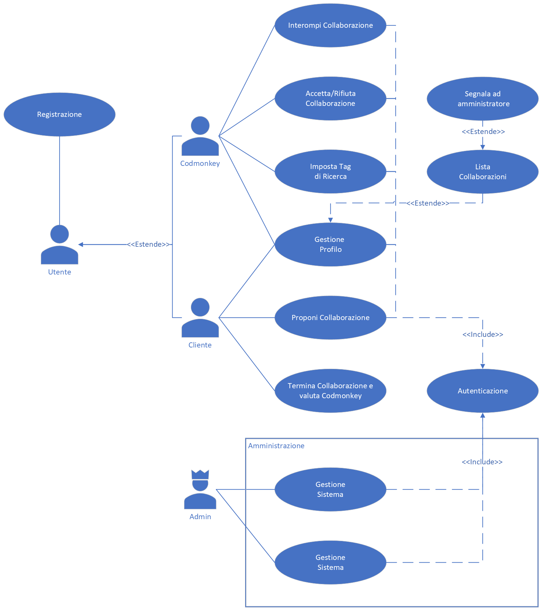
| Funzionalitá | Tipo | Complessitá | Reqisiti |
|---|---|---|---|
| Registrazione | Memorizzazione dati | Semplice | R1F |
| Autenticazione | Interazione con l’esternoGestione dati | Semplice | R2F |
| Homepage | Interazione con l’estreno | Complessa | R3F, R12F, R16F, R19F |
| Gestione Account | Interazione con l’esternoMemorizzazione datiGestione dati | Complessa | R4F, R5F, R16F |
| Modifica dati personali | Interazione con l’esternoMemorizzazione datiGestione dati | Semplice | R5F |
| Modifica password | Interazione con l’esternoMemorizzazione datiGestione dati | Semplice | R4F |
| Elimina account | Interazione con l’esternoMemorizzazione datiGestione dati | Semplice | R4D |
| Lista collaborazioni | Interazione con l’esterno | Semplice | R6F |
| Segnala ad Amministratore | Memorizzazione datiGestione dati | Semplice | R18F |
| Imposta Tag | Interazione con l’esternoMemorizzazione datiGestione dati | Semplice | R7F |
| Accetta/Rifiuta proposta di Lavoro | Gestione dati | Semplice | R10F |
| Interrompi Lavoro | Memorizzazione datiGestione dati | Semplice | R11F |
| Proponi lavoro | Interazione con l’esternoMemorizzazione datiGestione dati | Semplice | R13F, R15F, R19F |
| Termina Collaborazione e Valuta Codemonkey | Interazione con l’esternoMemorizzazione datiGestione dati | Semplice | R14F |
| Gestione Sistema | Interazione con l’esternoMemorizzazione datiGestione dati | Complessa | R8F, R9F, R19F |
| Gestisci Utenti Registrati | Interazione con l’esternoMemorizzazione datiGestione dati | Semplice | R8F |
| Ricerca Codemonkey | Interazione con l’esternoGestione dati | Semplice | R9F |
| Visualizza Segnalazioni | Interazione con l’esterno | Semplice | R4D |
| Visualizza Log | Interazione con l’esterno | Semplice | R21F |
|>
m4cm|>m3cm|>m3.5cm|>
m2.75cm|
Requisito & Categoria & Impatto & Funzionalitá
Interfaccia intuitiva(R1F) & Usabilitá & Migliorare esperienza & Homepage, Gestione Profilo
Informazioni aggiuntive sullo stato attuale di impegno lavorativo della Codemonkey(R2F) & Usabilitá & Migliorare esperienza & Homepage
Informazioni aggiuntive sullo storico lavorativo della Codemonkey(R3F) & Usabilitá & Migliorare esperienza & Homepage
Informazioni aggiuntive sulle valutazioni della Codemonkey(R4F) & Usabilitá & Migliorare esperienza & Homepage
-1.9cm0cm
|>
m3.5cm|>
m7.5cm|>
m3cm|
Maschera & Informazione & Funzionalitá Maschera & Informazione & Funzionalitá View Registrazione & Username, Password & Registrazione
View Autenticazione & Username, Password, Registrazione, Recupero credenziali & Autenticazione
View Homepage & Lista di Codemonkey, Casella di ricerca per trovare i Tag adatti, pulsante per Autenticarsi e per Registrarsi, Pulsante per la gestione dell’account nel caso di Utente Autenticato & Homepage
View Homepage Codemonkey & Immagine di profilo, descrizione e valutazioni della Codemonkey, lista di Lavori svolti e numero di Lavori ai quali sta partecipando la Codemonkey, pulsante Proponi Lavoro & Homepage
View Proponi Lavoro & Bottone Invia Proposta di Lavoro e casella di testo per la descrizione del LavoroNel caso l’Utente non sia stato autenticato dovrá prima prima passare dalla View Autenticazione & Proponi Lavoro
View Gestione Account & Lista di opzioni per:Modificare i dati personaliModificare la passwordEliminare l’accountLista CollaborazioniNel caso di Codemonkey sará presente anche un sistema per impostare i Tag & Gestione account
View Modifica dati personali & Casella di testo modificabile della propria Biografia, una casella di testo dove modificare la Password (previa conferma della nuova Password e di quella precedente), un bottone per inserire una nuova immagine di profilo e un bottone per salvare le modifiche & Modifica dati personali
View Imposta Tag & Casella testuale per l’inserimento di un nuovo TagLista di Tag simili suggeritiBottone aggiungi TagLista Tag giá aggiuntiBottone Rimuovi Tag & Imposta Tag
View Elimina Account & inserimento Password per conferma, Bottone elimina Account & Elimina Account
View Collaborazioni Cliente & 3 Liste di Collaborazioni: In attesa di accettazione, In corso e Terminate & Lista Collaborazioni
View Collaborazione Cliente & Nome Codemonkey, nome Cliente, immagine di profilo Codemonkey, immagine di profilo Cliente, Tag associati alla Collaborazione, Descrizione Lavoro, pulsante “Termina Collaborazione e valuta Codemonkey” se é una Collaborazione in corso oppure valutazione Codemonkey e recensione se é terminata & Termina Lavoro/lista Collaborazioni
View Termina Collaborazione Cliente & Inserimento valori da 1 a 5 stelle per fornire la valutazione, casella di testo per immettere una recensione & Termina Collaborazione e valuta Codemonkey
View Collaborazioni Codemonkey & 3 Liste di Collaborazioni: Proposte, In corso e Terminate, una casella di testo per cercare una collaborazione specifica & Lista Collaborazioni
View Collaborazione Codemonkey & Descrizione della Collaborazione, Nome Clinete, descrizione personale Cliente, immagine di profilo del Cliente, pulsante “Termina Collaborazione” se é una collaborazione in corso oppure pulsanti Accetta Lavoro e Rifiuta Lavoro se si tratta di una proposta di lavoro, pulsante segnala ad Amministratore & Accetta/Rifiuta /Termina Lavoro
View segnala ad Amministratore & Casella testuale per scrivere la segnalazione e bottone per inviare la segnalazione & Segnala ad Amministratore
View Pagina Amministratore & Lista delle pagine a cui l’admin ha accesso, & Gestione Sistema
View Gestisci Utenti Registrati & Lista di Utenti Registrati con restrizioniCasella di ricerca per trovare un Utente RegistratoBottoni:Limita UtenteSospendi UtenteBlocca UtenteElimina Utente & Gestisci Utenti Registrati
View Visualizza Log & Lista di tutte le azioni compiute dagli admin e dagli UtentiCasella di testo per ricercare un eveno specificoBottone Scarica File di Log & Visualizza Log
View Gestione Filtri & Lista di tutti i filtri di ricercaBottone Elimina FiltroLista di tutti i Filtri propostBottone Accetta FiltroBottone Rifiuta Filtro Visualizza Log & Gestisci Filtri di Ricerca
-1.9cm0cm
| Informazione | Tipo Accesso |
| Lista Codemonkey | Lettura |
| Informazioni Codemonkey | Lettura |
| Informazione | Tipo Accesso |
| Username | Lettura |
| Lettura/Scrittura | |
| Password | Scrittura |
| Lista Collaborazioni | Lettura |
| Valutazione | Lettura |
| Dati Personali Codemonkey | Lettura/Scrittura |
| Lista Tag | Lettura/Scrittura |
| Informazione | Tipo Accesso |
| Username | Lettura |
| Lettura/Scrittura | |
| Password | Scrittura |
| Lista Collaborazioni | Lettura |
| Dati Personali Cliente | Lettura/Scrittura |
| Lista Codemonkey | Lettura |
| Informazioni Codemonkey | Lettura |
| Valutazione Lavoro | Scrittura |
| Proponi Lavoro a Codemonkey | Scrittura |
| Informazione | Tipo Accesso |
| Lista CodeMonkey | Lettura |
| Lista Utenti | Lettura |
| Configurazione Utenti | Lettura/Scrittura |
| Log | Lettura |
| Funzionalitá | Scomposizione |
| Homepage | Ricerca Codmonkeys, Visualizza profilo Codmonkey |
| Gestione Acoount | Modifica Dati personali, Modifica Contatti, Modifica Password, Elimina Account |
| Gestione Sistema | Gestisci Utenti Registrati, Gestisci Filtri di Ricerca, Visualizza Log |
| Sotto Funzionalitá | Sotto Funzionalitá | Legame | Informazioni |

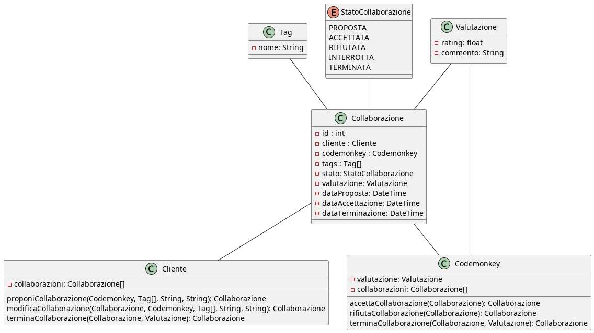
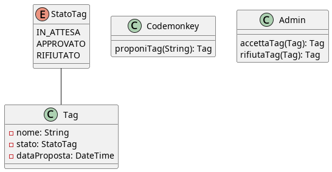
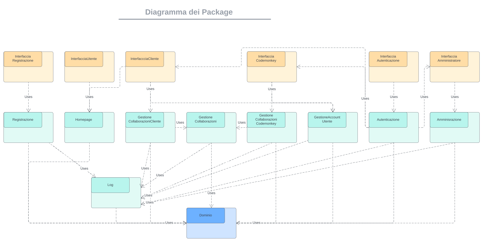
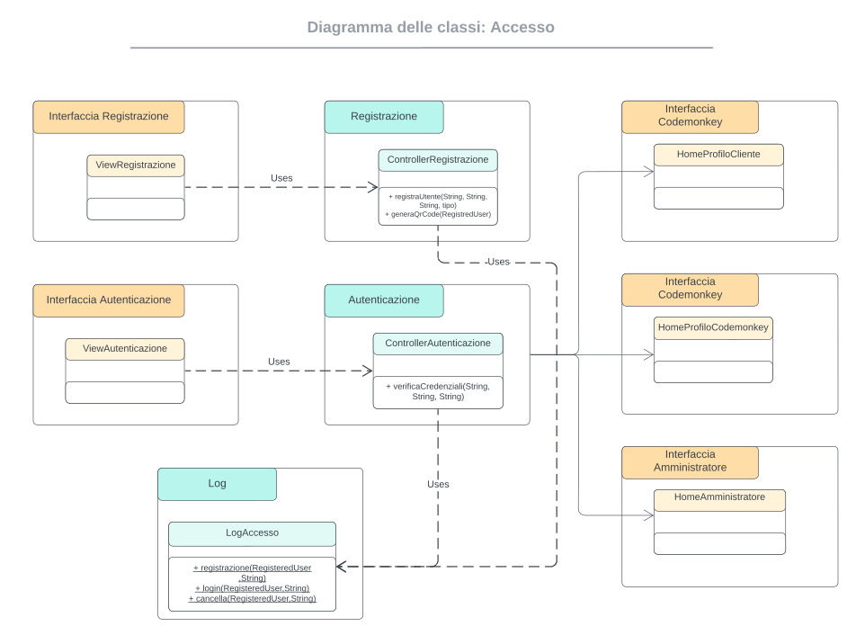
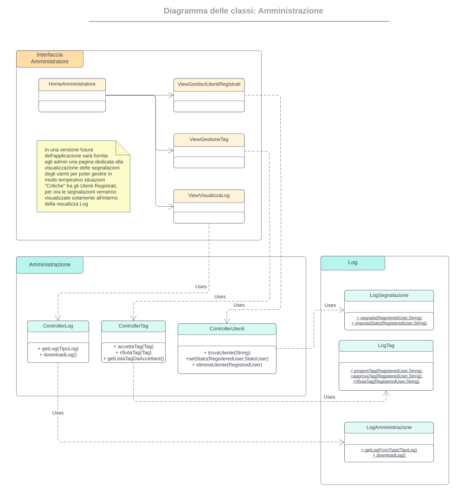
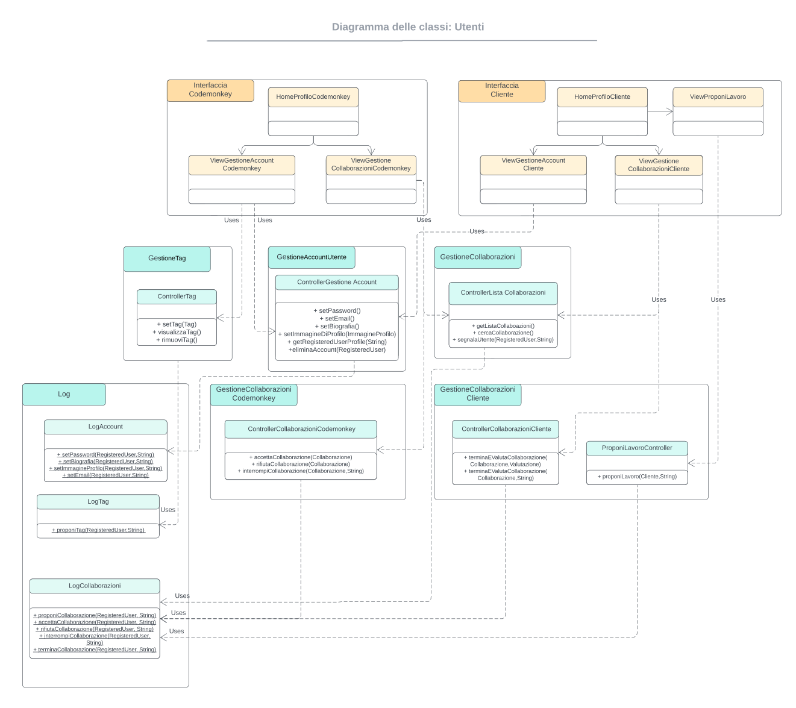
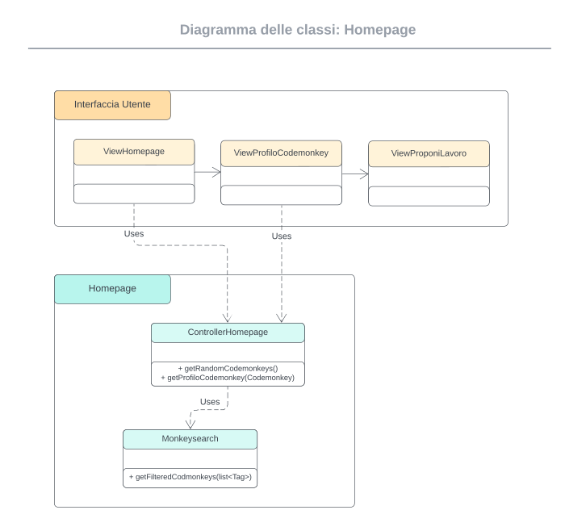
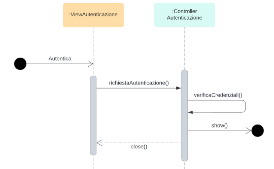
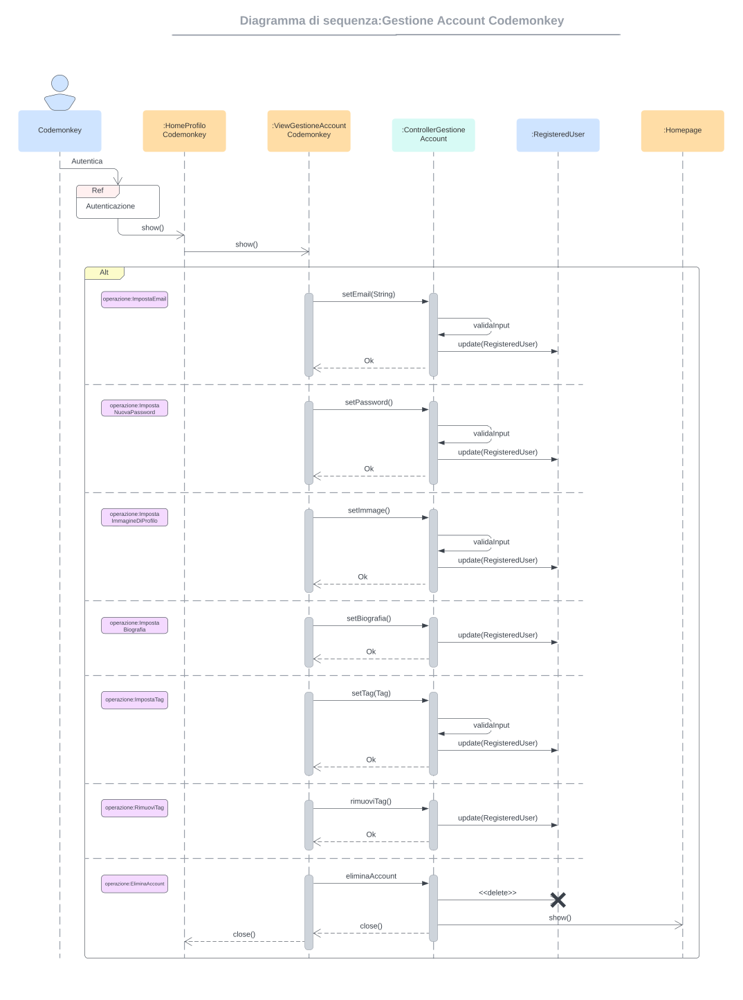


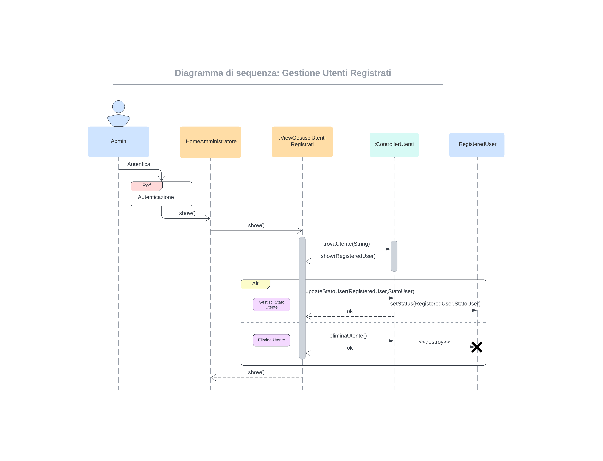
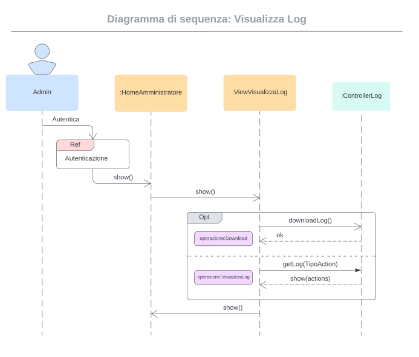
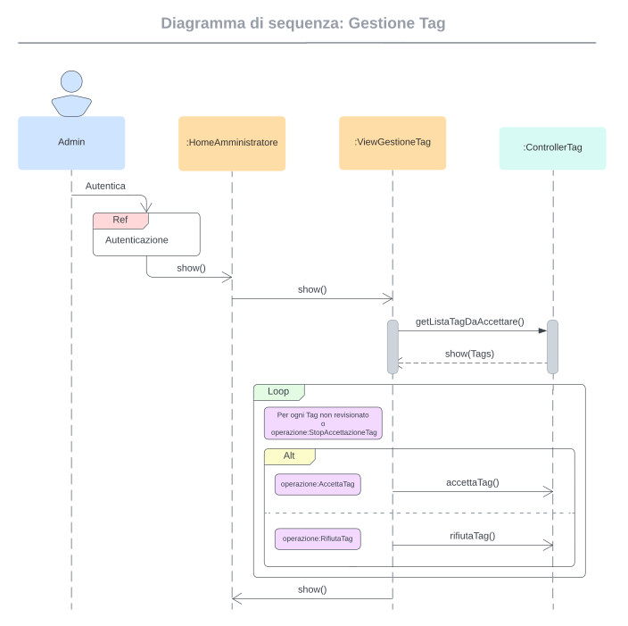
Si prevede di effettuare test automatici sulle unità di codice del sistema, sia dal lato client che dal lato server, in modo da garantire che ogni unità funzioni correttamente. Inoltre, si prevede di effettuare test automatici sulle API del sistema, in modo da garantire che la comunicazione tra i due lati avvenga correttamente.
Il progetto e lo sviluppo del sistema sono assegnati a diversi team
come indicato nella tabella sottostante:
| Team | Persone assegnate |
|---|---|
| Team Prgettazione | Alessandro, Stefano, Valerio |
| Team sviluppo | Alessandro, Stefano, Valerio |
| Team DB | Alessandro, Stefano, Valerio |
| Team sicurezza | Alessandro, Stefano, Valerio |
| Team grafico | Alessandro, Stefano, Valerio |
| Package | Progetto | Sviluppo |
|---|---|---|
| Dominio | Team progettazione + Team DB | Team sviluppo + Team DB |
| Interfaccia Registrazione | Team Progettazione + Team Grafico | Team Sicurezza + Team Grafico |
| Interfaccia Utente | Team Progettazione + Team Grafico | Team Sviluppo + Team Grafico |
| Interfaccia Cliente | Team Progettazione + Team Grafico | Team Sviluppo + Team Grafico |
| Interfaccia Codemonkey | Team Progettazione + Team Grafico | Team Sviluppo + Team Grafico |
| Interfaccia Utente Registrato | Team Progettazione + Team Grafico | Team Sviluppo + Team Grafico |
| Interfaccia Autenticazione | Team Progettazione + Team Grafico | Team Sicurezza + Team Grafico |
| Interfaccia Amministratore | Team Progettazione + Team Grafico | Team Sviluppo + Team Grafico |
| Registrazione | Team Sicurezza | Team Sviluppo Sicurezza |
| Autenticazione | Team Sicurezza | Team Sviluppo Sicurezza |
| Log | Team Sicurezza | Team Sviluppo Sicurezza |
| Homepage | Team progettazione + Team Grafico | Team Sviluppo + Team Grafico |
| Package | Progetto | Sviluppo |
|---|---|---|
| Gestione Collaborazioni Cliente | Team Progettazione | Team Sviluppo |
| Gestione Collaborazioni Codemonkey | Team Progettazione | Team Sviluppo |
| Gestione Collaborazioni | Team Progettazione + Team DB | Team Sviluppo + Team DB |
| Gestione Account Utente | Team Progettazione + Team DB | Team Sviluppo + Team DB |
| Amministrazione | Team Progettazione + Team DB | Team Sviluppo + Team DB |
Nel futuro verrá costruita una chat interna alla piattaforma per permettere un dialogo fra Codemonkey e Cliente, eliminando il bisogno di utlilizzare strumenti esterni.
Requisiti non funzionali: Durante l’analisi del problema, sono emersi alcuni requisiti non funzionali che impongono dei vincoli per il sistema. I requisiti principali sono:
Interfaccia utente intuitiva: L’applicazione dovrà fornire un’interfaccia utente intuitiva e facile da usare, in modo che gli utenti possano interagire facilmente con le funzionalità offerte dall’applicazione.
Sicurezza: La sicurezza dei dati e delle comunicazioni è un requisito fondamentale per l’applicazione. Sarà necessario implementare meccanismi di sicurezza, come l’utilizzo del protocollo HTTPS per garantire una connessione sicura tramite crittografia, proteggendo così le informazioni sensibili degli utenti.
Buone prestazioni: L’applicazione dovrà essere veloce ed efficiente nel caricamento e scaricamento di dati, in modo da offrire un’esperienza utente fluida. Sarà necessario ottimizzare le prestazioni dell’applicazione attraverso l’ottimizzazione del codice e l’uso efficiente delle risorse del sistema.
Per
L’applicazione è sviluppata come applicazione web, in modo da essere acces sibile dai dispositivi che supportano le tecnologie web moderne e abbiano a disposizione un web browser.
Frontend:Il client (web browser) esegue l’applicazione Angular che permette all’utente di interagire con l’applicazione. L’applicazione comunica con il server attraverso richieste HTTP. Angular è un framework Javascript che realizza applicazioni web basate su componenti e che si occupa in automatico dell’ottimizzazione delle prestazioni. In più è stato scelta la libreria Material Design per la stilizzazione dei componenti, in modo da migliorare l’esperienza utente. È disposta anche una API pubblica per richieste REST.
Backend: L’applicazione lato server è sviluppata utilizzando il framework Rails per Ruby. Ruby è un linguaggio di scripting orientato agli oggetti, che permette di scrivere codice in modo semplice e veloce. Rails è un framework che permette di sviluppare applicazioni web in modo semplice e veloce, seguendo il pattern MVC. Rails si occupa di gestire le richieste HTTP e di gestire la comunicazione con il client. Il framework si occupa della maggior parte delle transazioni con il database, offrendo prestazioni e agilità nello sviluppo. Questo servizio è esposto attraverso API REST.
Persistenza: È stato scelto di utilizzare il database PostgreSQL, che è un database relazionale open source, in modo da garantire la persistenza dei dati. Postgresql si integra bene con Rails grazie ai bindings (collegamenti) forniti da librerie esterne. Per il salvataggio e il recupero delle immagini è stato scelto di utilizzare un servizio di cloud storage, cioè un server chiamato Bucket.
È stato adottato il Pattern Broker per la gestione della sessione e
per proteggere ulteriormente lo strato dei server. Questa scelta
consente di disaccoppiare il client dal backend, fornendo un’interfaccia
di comunicazione tramite API REST.
Nella configurazione dell’applicazione, il client richiede al server
frontend di scaricare l’applicazione Angular. Una volta che
l’applicazione è stata scaricata nel browser del client, essa utilizza
le API REST per contattare il backend e ottenere i dati necessari per la
visualizzazione corretta dell’interfaccia utente.
Il server frontend funge da intermediario tra il client e il backend.
Riceve le richieste del client, le instrada al backend appropriato e
restituisce le risposte al client. In questo modo, il frontend nasconde
la struttura dei server backend, consentendo una maggiore flessibilità
nel sistema (Dependency inversion principle).


L’aggiornamento del modello del dominio consiste in una rivisitazione del sistema di accesso, con l’utilizzo di two factor authentication con un codice Qr che viene fornito all’utente in fase di registrazione, per generare un codice numerico Totp, che verrà usato per effettuare l’accesso al sistema.
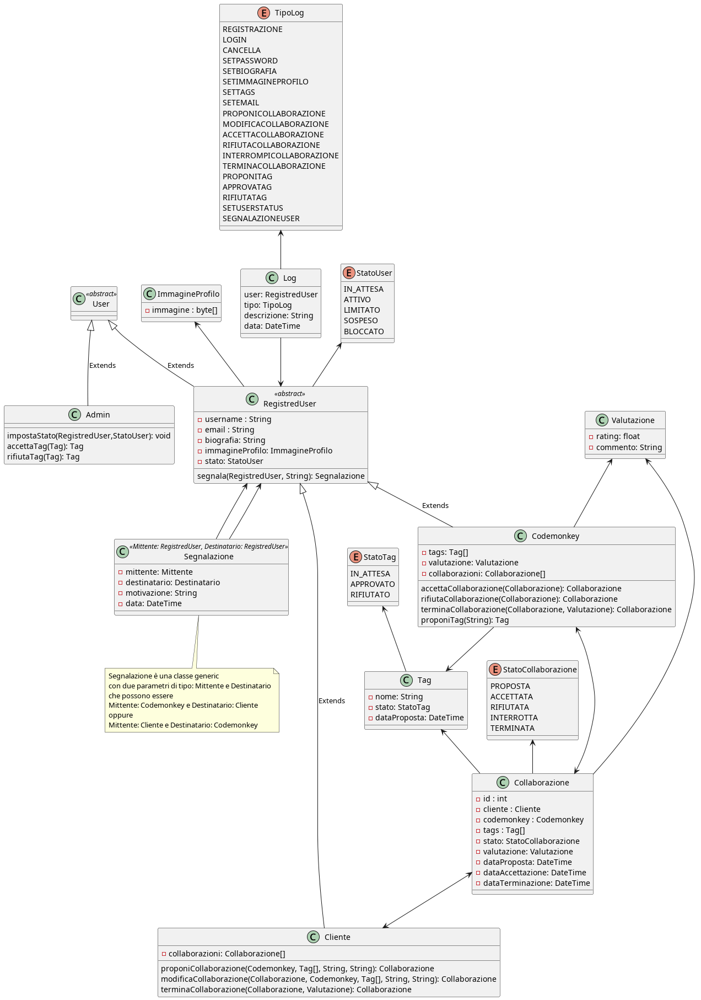
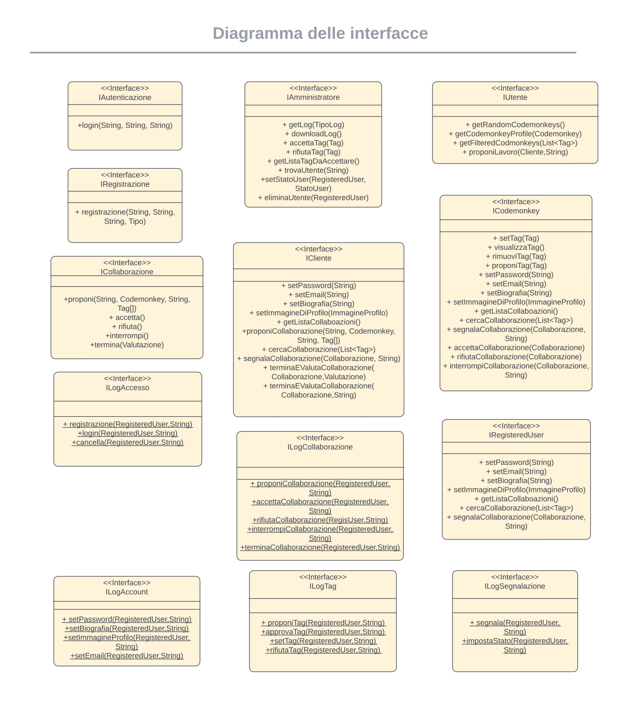
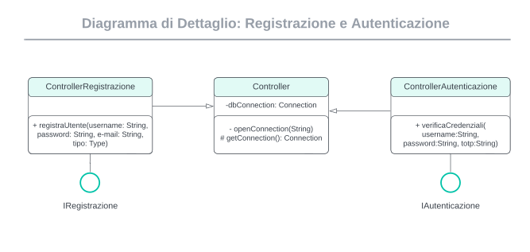
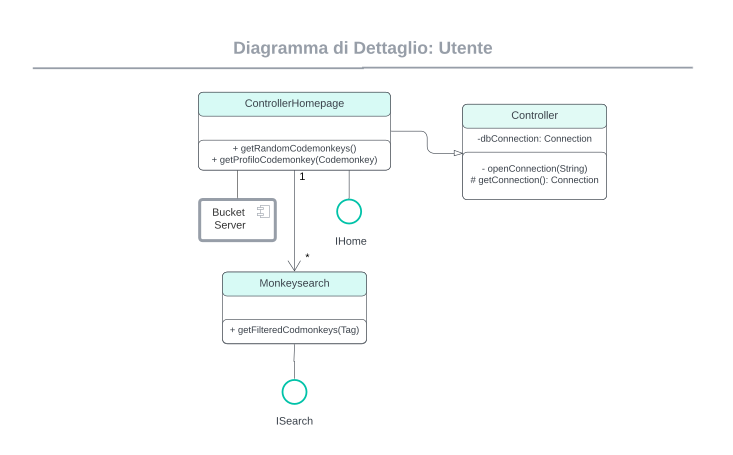
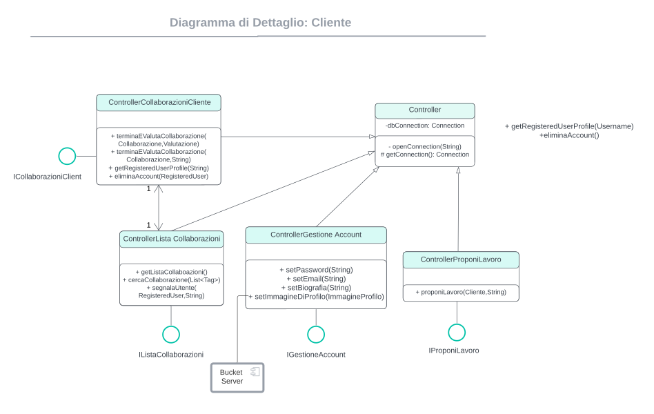

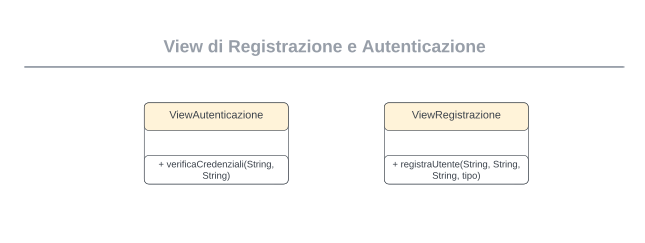
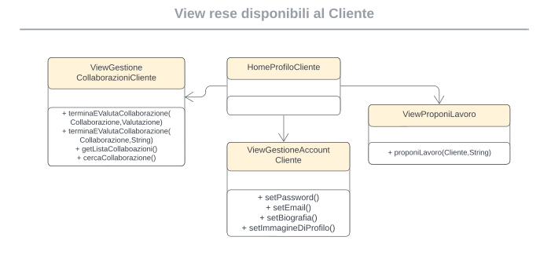

 |
||
| 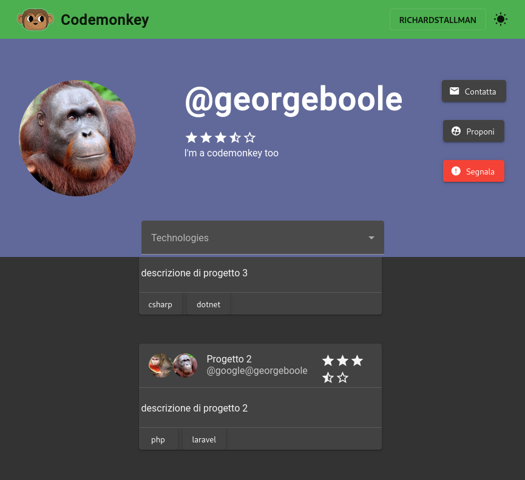 | ||
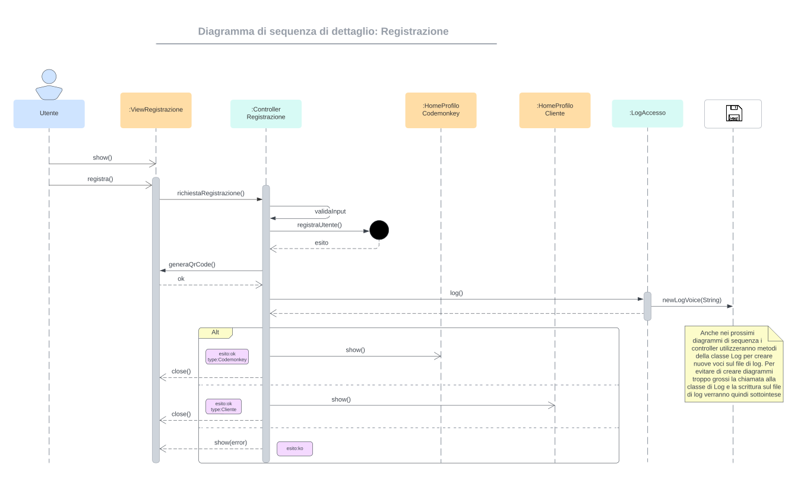
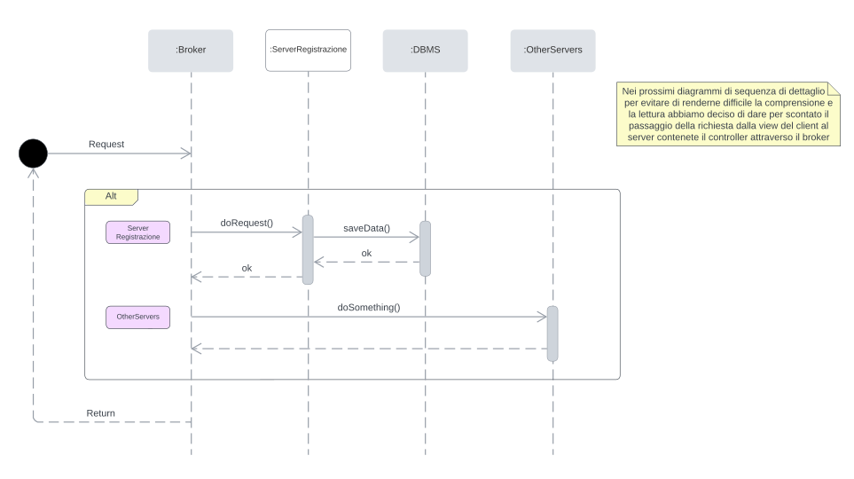

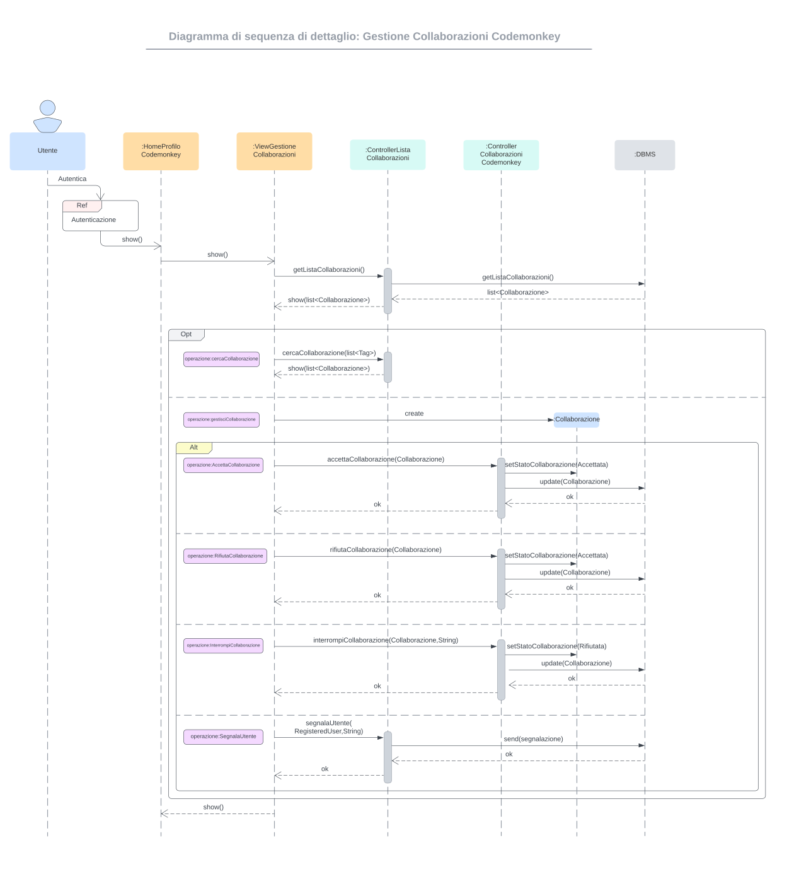
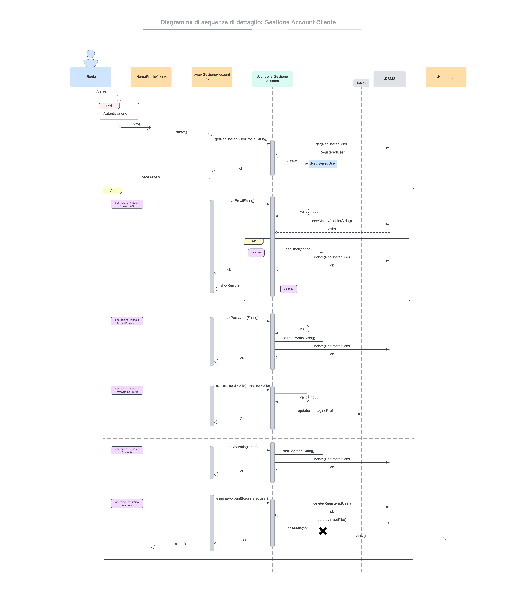
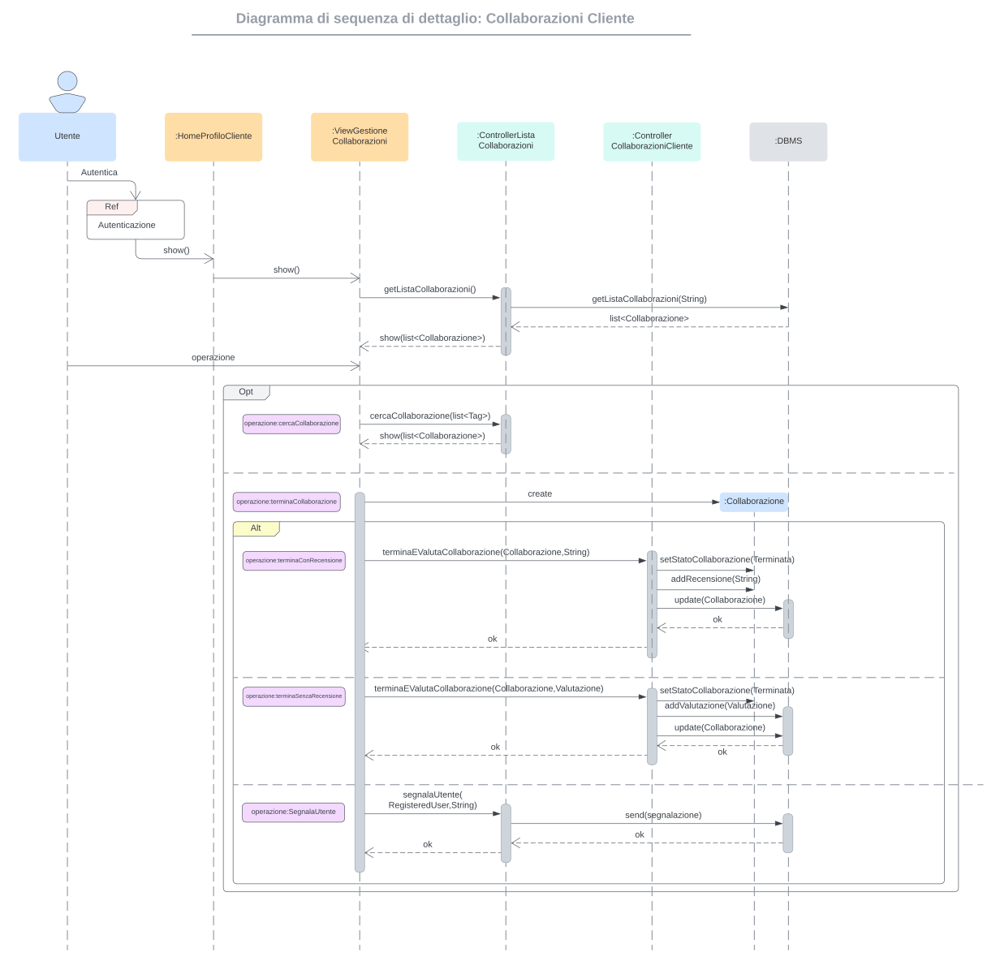
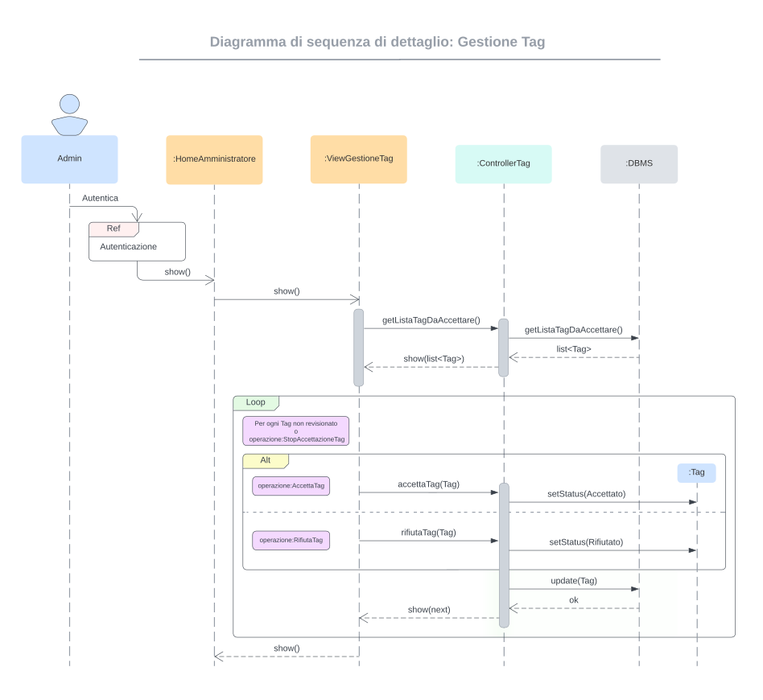
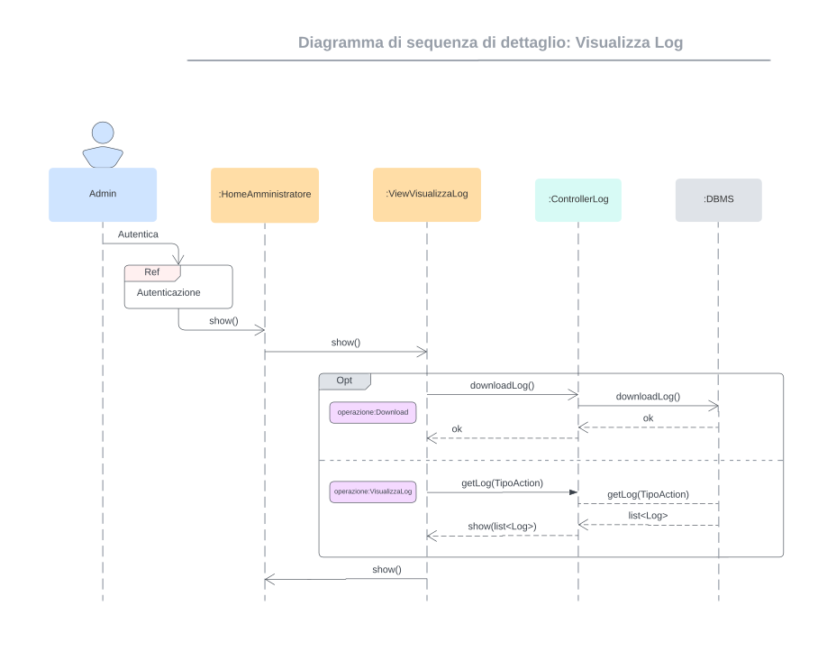
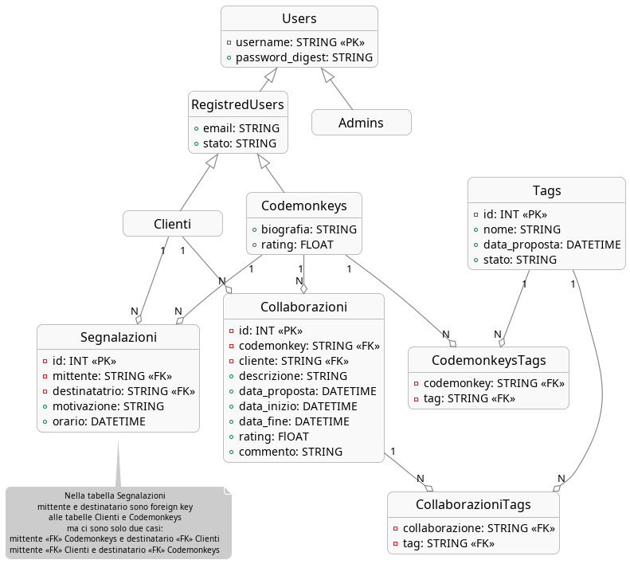
Il formato per i files di Log scelto è csv con semicolon (;) come
separatore.:
<Username Utente>;<TipoLog>;<DescrizioneLog>;<Data>
Questo è un esempio di un file di Log:
dennisritchie;PROPONICOLLABORAZIONE;codemonkey="briankernighan",titolo="The C Programming Language",descrizione="Mi serve un’altra mano per scrivere un manuale di programmazione per il linguaggio C",tags="C:documentazione";1978-02-22 12:00:00 briankernighan;ACCETTACOLLABORAZIONE;id="123456789";February 22, 19781978-02-22 12:01:00 dennisritchie;TERMINACOLLABORAZIONE;id="123456789",valutazione="5",commento="Ottimo lavoro!";1978-02-22 12:02:00 ’
Test di unità con il framework Rails di esempio per il modello
Collaborazione, vengono riportate le validazioni che devono
essere soddisfatte per poter salvare un’istanza di
Collaborazione nel database:
class Collaborazione < ActiveRecord::Base
belongs_to :codemonkey
belongs_to :company
belongs_to :technologies
# Database fields
validates :titolo, presence: true, length: { maximum: 256 }
validates :descrizione, length: { maximum: 4096 }
validates :stato, presence: true
validates :suggest_time, presence: true
validates :start_time, presence: true
validates :end_time, presence: true
validates :valutazione, numericality: { only_integer: true, allow_nil: true, greater_than_or_equal_to: 0, less_than_or_equal_to: 5 }
validates :comment, length: { maximum: 1024 }
endTest di unità con il framework Angular di esempio per il componente
UserCardComponent, vengono riportati i test per la
creazione del componente:
import { ComponentFixture, TestBed } from '@angular/core/testing';
import { HttpClientTestingModule } from '@angular/common/http/testing';
import { ActivatedRoute } from '@angular/router';
import { of } from 'rxjs';
import { UserComponent } from './user.component';
describe('UserComponent', () => {
let component: UserComponent;
let fixture: ComponentFixture<UserComponent>;
beforeEach(async () => {
await TestBed.configureTestingModule({
imports: [HttpClientTestingModule],
declarations: [UserComponent],
providers: [
{
provide: ActivatedRoute,
useValue: {
paramMap: of({ get: () => 'test-username' })
}
}
]
}).compileComponents();
});
beforeEach(() => {
fixture = TestBed.createComponent(UserComponent);
component = fixture.componentInstance;
fixture.detectChanges();
});
it('should create', () => {
expect(component).toBeTruthy();
});
});Test per i controller con Curl, vengono riportati i test per il
controller RegistrazioneContoller:
#!/bin/bash
function user/registrazione {
NAME=$1
PASSWORD=$2
EMAIL=$3
TYPE=$4
curl -X POST http://localhost:8080/api/user/registrazione -H "Content-Type: application/json" -d "{\"registrazione\": {\"username\": \"$NAME\", \"email\": \"$EMAIL\", \"password\": \"$PASSWORD\", \"type\": \"$TYPE\" }}"
}
# Test case 1: Valid signup
response=$(user/registrazione 'gracehopper' '12345678' 'gracehopper@example.com' 'Codemonkey')
if [[ "$response" == '{"username":"gracehopper","type":"Codemonkey","otp_provisioning_uri":"otpauth://totp/gracehopper?secret='*'"}' ]]; then
echo "Test case 1: Passed"
else
echo "Test case 1: Failed"
exit 1
fi
# Test case 2: Malformed email
response=$(user/registrazione 'edsgerdjikstra' '12345678' 'edsgerdjikstra@malformedemail' 'Codemonkey')
expected_response='{"status":500,"errors":["Malformed Email"]}'
if [[ "$response" == "$expected_response" ]]; then
echo "Test case 2: Passed"
else
echo "Test case 2: Failed"
exit 1
fiDurante la fase di implementazione è stato usata la “Modalità
sviluppo” per frontend e backend, in modo da poter testare velocemente
le funzionalità dell’applicazione. L’artefatto prodotto dalla fase di
build (costruzione) è un Docker Compose, cioè un file che contiene le
configurazioni per l’esecuzione dei container Docker. È stato infatti
adoperato il modello a container per la distribuzione dell’applicazione,
in modo da rendere le dipendenze esterne dei packages prodotti
trasparenti e portabili per il deployment su qualsiasi macchina che
utilizza Docker.